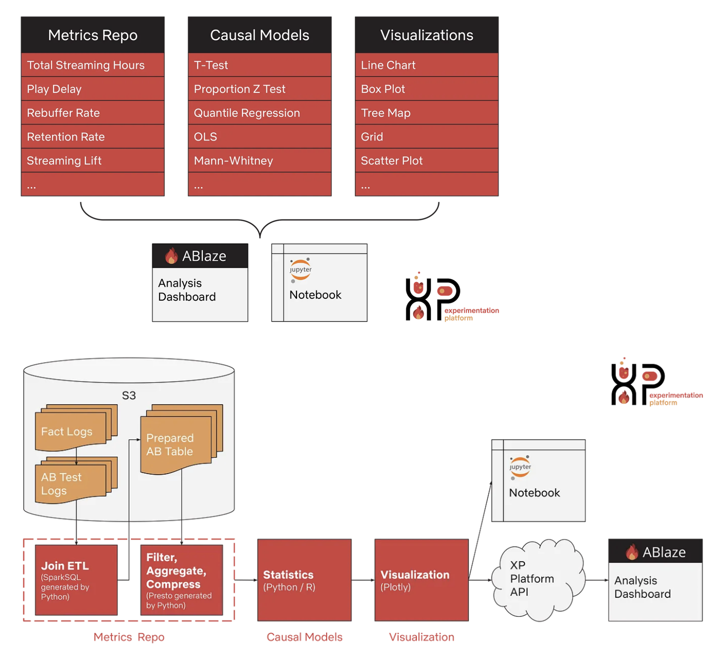
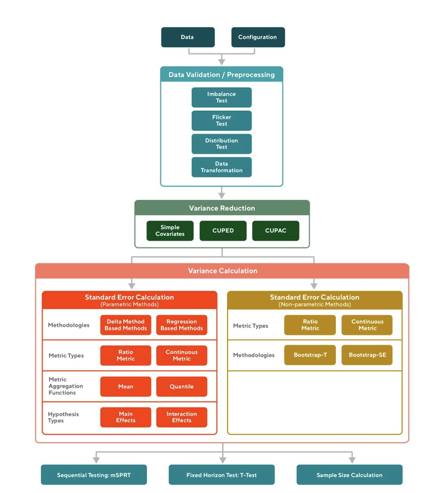
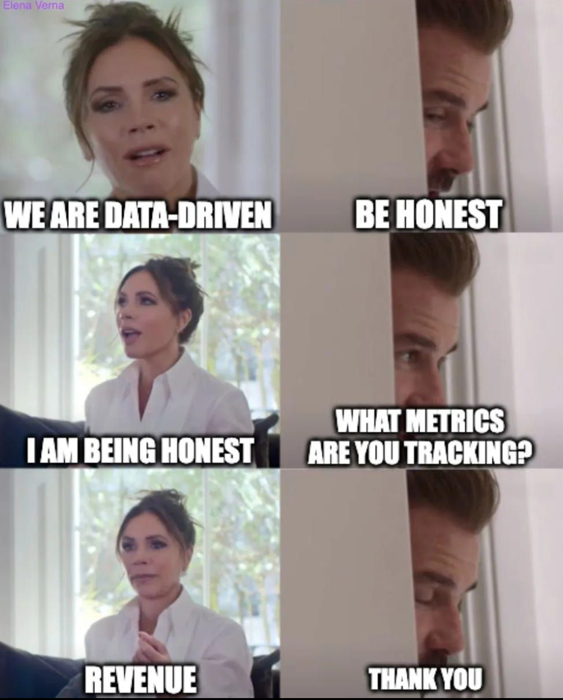

상반기 회고록: 3-7월
5달 동안 배우고 느낀 것들

근 5달만에 블로그에 글을 씁니다. 제가 배운 것들, 느낀 것들을 링크드인과 발표를 통해 틈틈히 공유를 해오긴 했습니다만, 일하랴.. 스터디하랴.. 여기에 개인적인 풍파를 견뎌야했고 여러 고민도 많았던 시간이었던 터라 차마 블로그 글을 쓸 시간까진 내지 못했다고 핑계를 대어 봅니다. 이런저런 일과 고민이 많았던 날들인 만큼 배우고 느낀 것들도 참 많았던 시간이었습니다. 이 글에 최대한 잘 녹여서 써보도록 하겠습니다.🙂
일
지금 내가 하고 있는 일을 구체적으로 이야기하자면
실험 관련 통계적 방법론 연구
실험의 신뢰도(trustworthiness)와 민감도(sensitivity) 관점에서 통계적 방법론에 관한 연구개발을 굉장히 중요하다.
Zotero 짱.
실험 통계 분석 엔진(stats engine) 개발
연구한 통계적 방법론을 실험 데이터에 적용하는 것을 자동화하는 것이라 보면 된다.
Python을 이용하고 있다. (R을 쓰고 싶은 마음이 굴뚝같지만😢)
실험 분석 결과 요약 및 전사 지표 모니터링을 위한 대시보드 개발
Success/Guardrail/Debug 지표들에 관한 요약, 통계 분석 결과 정리, 실험 데이터를 기반으로 한 정성적 메타 분석의 이해에 도움이 될 수 있는 전사 지표 모니터링을 수행한다.
Python의 Streamlit을 이용하고 있다.
실험 확장을 위한 실험 기반 제품 개선 문화 형성
- 실험 기반 제품 개선 문화를 형성하는 것은 굉장히 어렵다. 실험 플랫폼을 만들고 런칭한다고 해서 자동으로 이러한 문화가 형성되는 것은 아니다. 해외 빅테크 기업들 또한 이 문화를 잘 정착시켜내기 위해 많은 노력을 했다. (Gupta et al. 2019)에 이러한 노력들이 잘 정리되어있다. 관심이 있다면 참고해보기 바란다.
내가 조직 내에서 이렇게 포지셔닝하기 까지는 많은 고민들이 있었다. 입사 초기 먼저 “나는 우리 조직에 어떤 가치를 제공하는게 좋은가?”, “나만 제공할 수 있는 가치는 무엇인가?”에 대해 끊임없이 고민했다. 그 후에 내게 끊임없이 던진 질문은 “현재 나는 우리 조직에 어떤 가치를 제공하고 있는가?” 였다. 이러한 질문들을 던지며 내 업무에 살을 붙이다 보니, 위와 같은 4가지 업무를 하게되었다.
인생에서 내 정체성을 찾는 것이 중요한 만큼, 조직 내에서의 내 정체성을 찾는 것도 무척이나 중요하다고 생각한다. 다음과 같은 이유에서이다.
먼저 내가 확실한 정체성을 가지고 있는 분야가 있기 때문에, 무지한 부분, 이해가 어려운 부분들에 대해서 눈치보고 어물쩡 넘어가지 않고 적극적으로 질문할 수 있게 된다.
누가 시키지 않아도 내 일에 대해 깊게 파게 되고, 이에따라 일의 퀄리티가 높아짐과 동시에 개인과 조직의 성장은 자연스럽게 뒤따라오게 된다.
현재 내가 제공하고 있는 가치에 대해 확실한 진단이 되어 있으니, 보다 더 나은 가치를 제공하기 위해, 보다 더 많은 영향력을 갖는 사람이 되기 위해 앞으로 어떤 공부를 하고, 어떤 일을 제안해야할지 고민하게 된다.
통계 엔진 개발
앞서 이야기했듯 현재 온라인 실험과 관련하여 하고 있는 일 중 하나에 해당하는 일이다. 통계 엔진이라는 단어를 처음 듣는 사람도 있겠지만, 실험 플랫폼의 굉장히 중요한 구성 요소 중 하나라고 할 수 있다. 다음과 같이 넷플릭스와 Doordash의 실험 플랫폼의 구성 요소 중 하나로 통계 엔진이 등장하듯, 이는 생소한 개념이 아니다.


말 그대로 실험 데이터를 받아서 통계 분석을 수행하는 역할을 한다. 앞서 이야기했듯 실험의 신뢰도와 민감도 측면에서 정확한, 고도화된 통계 분석은 굉장히 중요하다. 지금까지 반영한 통계 분석 방법론들을 나열해보면 다음과 같다.
T-test
- 대조군 대비 실험군의 변화량(\(\Delta\)), 변화율(\(\Delta\)%)에 관한 통계적 가설검정에 필요
Delta method1
Test of Homogeneity3
실험 사전에 설계한 변형군 비율(대조군과 실험군 간 비율)과 실제 관측 비율에 관한 통계적 가설 검정에 필요
두 비율이 다를 경우 SRM(Sample Ratio Mismatch)이 발생했다고 이야기하며, 해당 실험의 결과는 신뢰할 수 없게 됨
검정력 분석4
검정력 분석의 경우, 이를 자동화하여 Scalable하게 제공하는 것에 많은 어려움이 있었는데 팀원분들과의 논의 끝에 방법을 찾았고 구현이 순조롭게 진행되고 있다. 곧 통계 엔진에 검정력 분석을 구현하고, Demo 형태로 검정력 분석 계산기를 대시보드에서 제공해보려고 한다.
앞으로의 계획은 Pre-experiment bias를 교정함과 동시에 실험의 민감도를 높이는 CUPED6를 구현하는 것과 여러 지표에 관한 가설 검정 시 1종 오류가 커지는 문제를 적절히 통제해주는 FDR7을 구현하는 것이다. 두 통계적 방법론들 또한 Scalable하게 구현을 해주어야 하는데, 이 과정에서 또 어떤 난관들이 기다리고 있을지.. 많은 걱정과 기대가 된다.
올바른 가설과 지표 설계의 중요성
실험에 있어서 올바른 가설과 지표가 설계되지 않는 다면, 앞서 언급한 통계엔진에서 수행하는 뒷단의 분석 방법론적 측면의 고도화는 아무짝에 쓸모가 없다. 실험의 라이프사이클 관점8에서 전, 중, 후 단계로 실험을 나누어 볼때 가설과 지표를 설계하는 실험 전 단계(Pre-experiment stage)가 전체 실험 사이클에서 가장 중요하다.
정교한 실험 가설에는 다음의 5 요소가 들어있어야 한다.
도메인: 실험은 어디서 이루어지는가? (e.g. Home, VIP, Checkout, …)
실험 피쳐: 어떤 변경을 가하는가? (e.g. UI 변경, 랭킹 알고리즘과 같은 백엔드 알고리즘)
실험 트리거 포인트: 실험에 노출되어 실험 대상으로 집계되는 기준은 무엇인가?
고객 가치: 실험 피쳐는 고객에게 어떤 가치를 제공할 것으로 예상되는가?
Primary metric: 해당 실험의 성공, 실패 여부를 결정하는 가장 중요한 지표는 무엇인가?
가설 설계에 관한 이야기는 여기서 마치고, 지표 설계에 관해 이야기해보자. 지표 설계와 관련해서는 한 가지 꼭 명심해야할 것이 있다. 만일 특정 실험 피쳐에 의한 변경 사항이 타 부서의 KPI에 영향을 미치는 부분이 있다면, 관련 부서들과 함께 충분한 논의를 통해 실험 지표 설계해야한다는 것이다. 가령, 해당 실험의 Primary metric을 최적화하는 것에 있어서, 타 부서의 KPI에 부정적 영향을 미칠 수 있는 부분이 있다면 이 부분을 정량화하여 Guardrail metric으로 사용한다든지와 같은 협의가 꼭 필요하다. ML 관점에서 본다면 비용 함수를 최적화하는 것에 있어서 regularization을 위해 적절한 penalty term을 두는 것과 같은 개념이다. 이 부분을 중요시 여기지 않고 지나친다면 추후에 조직적으로 큰 반발을 불러일으키는 상황을 마주하게 될 것이다.
지표를 잘 설계하는 것의 중요성은 더할나위 없이 중요하다. 사실 이는 실생활에서도 똑같이 적용된다. 다이어트를 한다고 했을 때 체중만 모니터링을 한다고 하면 올바른 다이어트를 할 수 있다고 생각하는가? 괜히 인바디에서 골격근량과 체지방량, 내장지방 레벨 등을 함께 제공하는 것이 아니다. 괜히 자동차 계기판에서 차량의 속도 외 여러 지표들을 함께 제공하는 것이 아니다. 이는 데이터 기반 의사 결정, 실험 문화에도 똑같이 적용된다. 오죽하면 해외에서도 다음과 같은 밈이 존재한다.

그림 속 남자의 표정이 모든 것을 말해준다. 수익 관련 지표가 중요하지 않다는 것이 아니다. 데이터 기반 의사 결정을 하겠다고 해놓고, 실험을 해서 제품을 개선하겠다고 해놓고 모든 상황에 수익 관련 지표만 추적하는 것이 잘못됐다는 것이다. 내 아이디어, 실험 피쳐가 구체적으로 어떤 것인지, 고객이 어떤 가치를 경험하기를 바라는지, 실험 피쳐가 전사의 각 조직에 어떤 영향을 미칠 수 있는지, 이 모든 것들을 생각하여 각 상황에 맞게 지표를 설계해야 한다.
실험 플랫폼 Phase I PRD 작성 지원
9월 중순 사내 실험 플랫폼 런칭을 앞두고 있다. 지난해 실험 기반으로 제품을 개선해 큰 성과를 낸 것에 관한 가장 큰 산물이라고 할 수 있다. 상반기 내내 기획과 개발 사이에 위치해 실험 분석, 문화 관점에서 PRD 작성을 지원하였다. 주로 2가지 측면에서 PRD 작성을 지원했다.
실험의 신뢰도 보장
올바른 실험 문화 정착
업무와 직접적으로 관련된 부분이라 자세한 제안 사항을 여기에 다 풀긴 어렵고, 몇가지 키워드만 제시해보겠다.
버킷 시스템 정의 및 Seedfinder 전략 제시
실험 메타 정보 및 데이터 집계를 위한 API 설계 요청
실험 가설 입력 가이드
통계적 유의성과 실무적 유의성을 고려한 실험 종료 케이스 정의
실험 조회/목록 기능 가이드
실험 QA 가이드
…
실험 플랫폼 Phase I PRD 작성 지원을 하며, 기획 및 개발 측에 요청하는 사항들이 점점 디테일 해졌다. 그리고, 커뮤니케이션 과정에서 그들의 입장을 들어보며 실험 신뢰도를 강제하는 것과 사용자 편의성 사이에서 적절한 균형을 맞추는 것이 중요하겠구나 라는 생각을 했다.
기획과 개발과 이러한 논의들을 거치며 실험에 관해 정말 많은 공부를 하게됐다. 무엇보다 데이터 관련 직군 외에 기획 및 개발과의 의사소통에도 어느정도 익숙함이 생겼다는게 이 업무의 가장 큰 소득이라 생각한다.
개발 로드맵 수립
통계 엔진, 대시보드 개발에 관한 향후 로드맵을 수립했다. Phase 별로 단계를 나누고, 각 Phase 마다 구현할 기능을 정리해두었다. 대뜸 로드맵 수립에 관해 이야기한 이유는, 선호님과 2분기 1 on 1때 구체적인 로드맵을 수립해보는게 어떻겠냐는 조언이 었었기 때문이다.
머릿 속으로 대충 로드맵을 그리고 있긴 했지만, 이를 Phase 별로 나누어 문서화하고 이를 공표할 생각까진 못했다. 나는 개발자도 아니거니와, 그간 어떤 프로젝트를 맡아 오랜 기간 개발해본 경험이 없었기에 전혀 생각하지 못했던 부분이었던 터라 굉장히 뜻깊은 조언이었다.
머릿 속 뒤죽박죽 있었던 지향점이 정리되고 나니 업무의 구체적인 우선순위를 설정하는 것이 한결 편해졌고, 내가 하는 일과 연계된 다른 일을 하는 사람들과의 소통에서도 한층 더 편안함이 느껴졌다.
비즈니스 환경에서의 일하는 방식
온라인 통제 실험에 관한 팀 스터디를 마치고, 헌철님의 적극 추천으로 <가설이 무기가 된다>라는 책으로 스터디를 진행했다.
굉장히 많은 것을 얻은 스터디였다. 책을 읽기 전에는 BCG 컨설턴트 출신이 전해주는 가설 설계의 중요성… 정도의 이야기를 전해주는 책이 아닐까 생각했으나, 다 읽고난 지금 생각이 드는 이 책에서 전하고자 하는 본질은 “비즈니스 환경에서 필요한 일의 방식”이라는 생각이 든다. 비즈니스 환경에서 리소스는 언제든 부족하다. 이때 필요한 것이 가설 기반 사고다.
직무 불문 일잘러가 되고 싶은 이 세상 직장인들에게 꼭 필요한 책이지 않을끼? 특히 의사결정권을 가진 레벨이라면 꼭 봐야하는 책이 아닐까 생각이 든다. 물론, 그 자리까지 올라가신 분들은 이미 암묵적으로 가설 기반 사고를 하고 계실 가능성이 굉장히 높을 것이다.
일은 엄청나게 하고 있는데 매번 결과물이 미흡한 사람들에게도 답을 줄 수 있는 책이라 생각한다. <가설이 무기가 된다>를 읽으며 가장 기억에 남는 내용들을 남기며 이야기를 마친다.
곁가지(개별 과제)가 아닌 줄기(전체적인 모습)를 그릴 수 있는 인간이 되자.
비즈니스에서 중요한 것
얼마나 많이 일했느냐? (X)
얼마나 정확하게 조사하고 분석했느냐? (X)
얼마나 좋은 정답을 짧은 기간 안에 제시하고, 그것을 즉시 실행에 옮길 수 있느냐? (O)
가설사고를 습관화하면 리더에게 빼놓을 수 없는 앞일을 읽는 능력이 생긴다.
- 선견성과 적은 정보로 의사결정을 하는 판단력, 즉 결단력이 갖춰진다.
미팅 전 To do list
업무 범위, 소통하는 사람들의 범위가 점차 넓어지다 보니, 종종 미팅 일정에 과부하가 걸리는 경우가 있었다. 모든 미팅 일정을 별 생각없이 수락하다 보면, 내 업무에 집중할 시간은 놓치게 된다. 이에 따라 나만의 미팅 전 To do list를 정리하고, 내 역할이 꼭 필요한 또는 꼭 전달받고 싶은 내용이 있는 미팅에 대해서만 참가하고 있다.
미팅 전 To do list:
미팅 수락 전 내 역할이 꼭 필요한 미팅인지, 꼭 전달받고 싶은 내용이 있는 미팅인지 충분히 고민할 것
내 역할이 불명확하고 이해가 안된다면, 미팅 주선자에게 어떤 맥락의 미팅인지 물어볼 것
미팅의 목적이 무엇인지 정확하게 파악할 것
미팅 전,
필요한 배경지식을 리마인드 할 것
전달받은 미팅 자료 또는 Wiki가 있다면 미리 검토할 것
미팅에서 논의해볼 법한 사항이 있다면 미리 정리할 것
개인
실험 스터디 소회
지난 2월 가짜연구소 인과추론 팀에 조인하여 시작한 <온라인 통제 실험 연구자로 거듭나기> 스터디가 7월 4일 최종 리뷰를 마지막으로 끝이났다. 스터디에서 사용한 Ronny Kohvai의 저서(Kohavi, Tang, and Xu 2020)는 A/B Test의 바이블로 여겨지긴 하지만, 조직 문화부터 실험 윤리, 통계적 방법론, 실험 플랫폼, 로그 계측 등 실험과 관련한 모든 주제들을 다루기 위해 방대한 양의 내용을 작게 압축시켜둔 부분이 많다. 꽤 어려운 책이라는 얘기다. 실무에서 A/B Test를 수행하며 여러 고초를 겪은 실무자가 아니라면 이해하기 어려운 대목이 정말 많다.
3월 ~ 6월까지 중간에 한 주 쉰 것을 제외하고 4달의 기간 동안 매주 만나며, 스터디 계획 당시 내가 선정한 챕터들을 모두 들여다볼 수 있었다. 나야 스터디 시작 전 해당 교재를 이미 1회독을 했고 특정 챕터는 4, 5회독.. 개인적인 논문 연구까지 했던 사람이기에 그나마 수월했지만, 본 스터디를 통해 처음 이 책을 접하신 스터디원분들은 업무를 병행하며 매주 한 챕터씩 소화하시느라 정말 힘드셨을 것이다. 그럼에도 불구하고, 각자의 발표 차례때 외부 자료, 논문까지 찾아가며 자료를 준비해주신 정성에 다시 한 번 감사의 말씀을 올린다.
이번 스터디를 통해 “실험의 신뢰도를 보장하기 위해서는 이러한 것들이 필요하고, Data Scientist/Analyst 입장에서 이런 것들을 제안할 줄 알아야 하는구나.” 하는 것들을 얻어갔으면 했는데, 팀원 분들의 소회를 최종 리뷰때 들어본 결과 이 부분이 어느정도 충족된 것으로 보인다. 스터디 한 번으로 모든 것을 이해할 순 없다. 이런저런 정보들을 머릿 속에 캐치해두고, 실무에서 관련 상황을 마주했을때 책을 꺼내볼 필요성을 스스로 느낀다면 그것만으로 충분하다.
스터디를 계획할 무렵엔 하반기 스터디도 이어서 진행해 볼 생각이었으나, 개인적 고민이 많아 스터디는 이렇게 마무리하는 것으로 결정했다. 그리고, 내가 어떤 활동을 해야지 실무자들에게 실험 측면에서 좀 더 실용적인 도움을 줄 수 있을지에 관한 고민도 들었다. 실험이란 것은 결국 조직 문화와 직접적으로 결부되는데, 우리나라의 온라인 실험 수준을 고려해봤을때 어쩌면 통계적 방법론에 관한 이야기를 공유하는 것 보다는 실무에서 실험을 수행해오며 겪은 챌린징과 그에 따른 의사결정 과정을 구체적으로 공유하는 것이 더 많은 도움이 되지 않을까 하는 생각이 들었기 때문이다. 통계적 방법론을 고도화하는 것은 보다 차후의 일일 수 있다. 물론 두 가지 일 모두 동시에 진행되어야하는 것이긴 하지만.😅
아무튼 개인적 고민을 토로하는 것은 이쯤으로 하자. 스터디 자료는 아래 깃허브에 정리해두었다.
발표
5월, 6월 동안 4개의 외부발표 일정을 소화했다. 의도치않게 일정들이 꽤 몰려서 고생을 좀 했다.
실무로 통하는 인과추론 특강 <온라인 통제 실험 소개 및 통계 분석 기초>, 유튜브, 20240519
- 가짜연구소 인과추론 팀에서 번역한 <실무로 통하는 인과추론 with 파이썬>의 Chapter 2에서 짚고 있는 통계 이론들의 중요한 포인트들을 자세히 리뷰했고, 여기에 온라인 통제 실험과 관련한 실무적 포인트를 곁들였다.
가짜연구소 인과추론 팀 행사 <CTR의 분산 추정 중 빠질 수 있는 함정>, op.gg 사옥, 20240525
- 대표적인 예로 CTR이 꼽히는 비율 지표에 관한 정확한 분산 추정을 하는 방법에 대해 이야기했다.
데이터야놀자 2024 <실험에 기반한 당신의 가설 검정 결과를 신뢰할 수 없는 이유>, 광화문 마이크로소프트 오피스, 20240601
- 수식을 최대한 배제하고 그림을 기반으로 최대한 쉽게 검정력과 검정력 분석의 본질을 설명하고, 이를 둘러싼 오해를 풀고자 했다.
2024 Korea Summer Workshop ln Causal Inference <온라인 통제 실험의 모범 사례>, Zoom, 20240613
- A/B 실험의 신뢰도를 보장하기 위해 실험의 라이프사이클 전반에 걸쳐 고려해야할 사항들에 대해 이야기했다.
발표했던 주제들이 여러번 곱씹었던 내용이기도 하고, 사내에서도 이미 발표를 했던 내용들이라 조금 방심했는데 역시.. 그 행사의 성격에 맞게 들으러오는 청중들에 맞게 발표의 스토리라인을 만든다는게 쉽지 않았다. 발표 자료와 발표 영상 링크들은 블로그의 리소스 탭에 발표 아카이브에 정리해두었다.
요즘IT에서 했던 실험 이야기
신뢰할 수 있는 온라인 통제 실험을 수행하기 위해 어떤 요소들을 고려해야하는지, 실험의 라이프사이클 관점에서 조망하여 글을 쓰고 있다.
실험을 전, 중, 후 단계로 나누어 볼 때, 모든 단계가 중요하지만 우선순위를 꼽자면 실험 전 단계가 가장 중요하다. 첫 단추를 잘 꿰는 것이 중요한 것과 같은 맥락이다. 8월에는 실험 중, 실험 후 단계에서 고려해야할 요소들에 대해 이야기할 예정이다.
연구 논문 게재
대학원 졸업 후 첫 직장인 가천대 길병원 인공지능 빅데이터 융합센터에서 수행했던 대기오염원 건강영향평가 연구에 관한 첫 논문이 게재되었다. 당시 내가 가장 많은 시간을 할애했던 메인 연구과제이다. 고작 학위논문 하나 쓰고 석사를 졸업한 뒤 들어간 첫 직장에서, 의대 교수님들과의 협업을 통해 연구의 맥락을 이해하고.. 홀로 방법론을 연구한 뒤 써낸 논문이기에 내 자신에게는 더욱 의미있는 결과물이다.
해당 논문에서는 COVID-19 팬데믹 상황 하에 조치된 비약물적 중재(NPIs)를 고려하여, 팬데믹 이전, 이후 시기로 나누어 우리나라 주요 6개 대도시에 대해 대기오염원이 호흡기 질환에 미치는 영향을 평가했다. 위험 평가에는 당시 해당 연구를 주도하고 있던 모델인 Distributed lag non-linear models9을 사용하였으며, 6개 대도시의 분석 결과를 종합하기 위해 Multivariate meta-analysis를 수행을 해주었다.
당시 6개 대도시에 대해 호흡기 질환 외에도 정신과 질환, 안 질환 등에 관련한 수십개의 세부 질환에 대해서 여러 대기오염원에 관한 건강영향평가를 수행해야했다. 그래서, 회귀모델 임에도 일종의 최적화 알고리즘이 필요했고10 이에 회귀모델에서 사용하는 고전적인 변수 선택 방법론(variable selection) 중 하나인 Best subset regression을 이용하여 간단한 최적화 알고리즘을 개발하여 수백개의 모델을 최적화해주었다. 이 알고리즘을 누구나 쉽게 갖다 써먹었으면 하는 마음에 깃헙에 Reproducible tutorial까지 정리하여 논문에 기술해두었다.
데이터 수집부터 모델링, 결과 요약까지 모두 맡아서 진행해야했던 탓에.. 돌아보면 혼자 정말 고군분투했다. 논문에 정리된 Table, Figure들을 볼때면 지금도 그때 생각이 새록새록 난다. 연구를 진행하며 회귀 모델링과 관련한 여러 Research questions이 많이 생겨서 연구자로서 이런저런 딜레마도 많이 생기고 힘들었지만, 대학원 졸업 무렵 가장 자신있고 재밌어했던 영역을 실제 연구에 활용해볼 수 있었던 기회였기에 그 동력을 잃지않고 연구를 마무리할 수 있었던 것 같다.
References
Footnotes
그림 2의 Standard error calculation 중 하나에 해당↩︎
대표적인 지표으로 CTR(Click Through Rate)이 있다.↩︎
카이스퀘어 동질성 검정↩︎
그림 2의 Sample Size cacluation이 검정력 분석에 해당↩︎
올바르게 귀무가설을 기각시킬 확률↩︎
Controlled experiment Using Pre-Experiment Data↩︎
False Discovery Rate을 조절하는 방법론으로, 대표적으로 Benjamini-Hochberg Procedure가 있다.↩︎
요즘IT에 실험의 라이프사이클 관점에서 신뢰할 수 있는 A/B 테스트 만들기 라는 글을 기고하고 있다.↩︎
크게 보면 시계열 회귀 모델의 갈래 중 하나↩︎
즉 정교한 잔차분석을 통해 하나하나 모델을 조정할 수 있는 상황 자체가 아니었다.↩︎
Reuse
Citation
@online{bang2024,
author = {Bang, Taemo},
title = {상반기 회고록: 3-7월},
date = {2024-07-28},
url = {https://taemobang.com/posts/2024-07-28-fisrt-half-memory/},
langid = {kr}
}